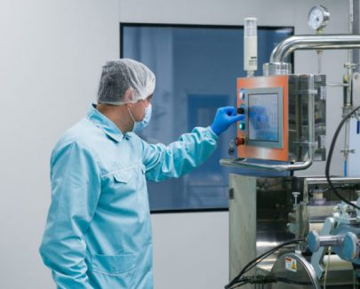
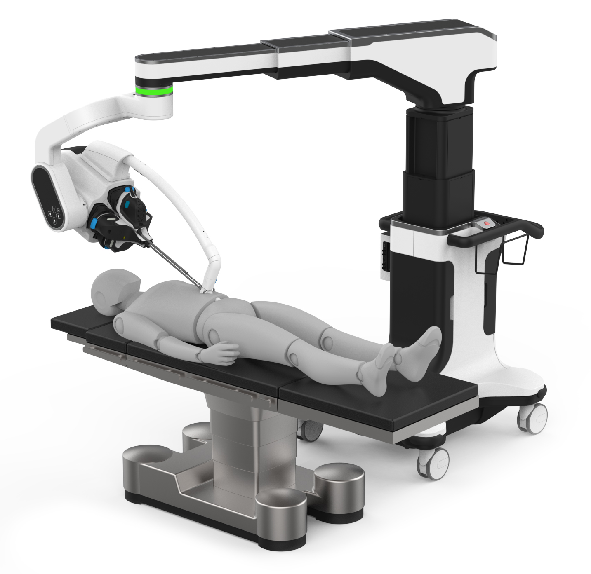
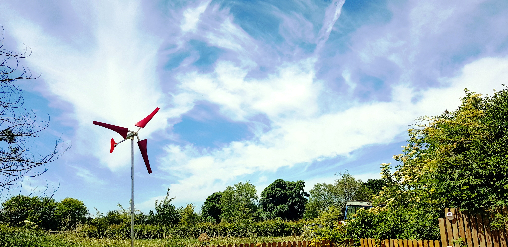
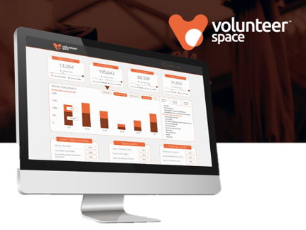
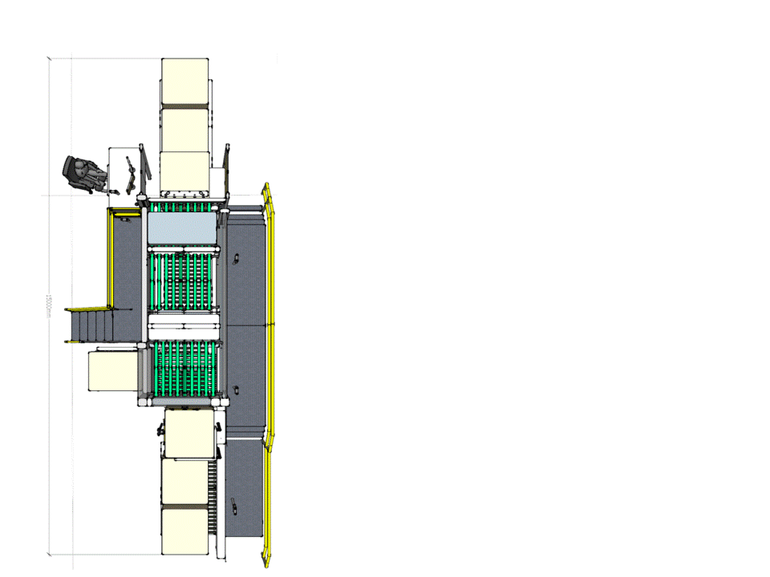
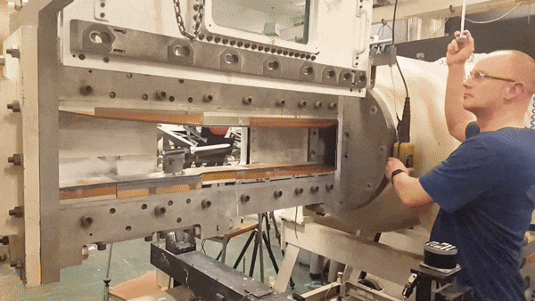
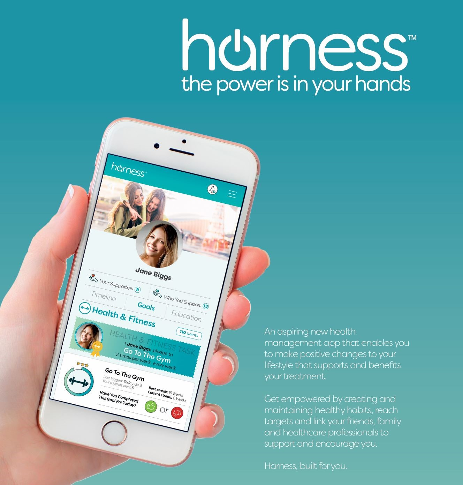

I work at the intersection of engineering and commercial strategy — building cutting-edge hardware, leading complex programmes, and consulting on deep tech. With a background that spans technical delivery and early-stage founding, I'm exploring where my engineering depth and commercial instincts create the most leverage, whether building directly, or enabling what gets built.
Engineering work across some of the hardest problem domains — surgical robotics, medical devices, energy hardware, and drug delivery. Building the technical range and founding instincts to recognise a world-scale problem when it presents itself.
Advanced biological manufacturing hardware pushing the boundaries of what's possible in bioproduction systems.
Engineering a device to deliver a polymeric gel into the eye via narrow-gauge needles, photo-crosslinked in-situ to form a biodegradable implant enabling 6+ month sustained ophthalmic biologic delivery.
Commercial and strategic collateral supporting CDP's deep tech consulting practice — translating technical innovation into market strategy.

Led a £multi-million, 30-person multidisciplinary team developing a novel medical device from concept to validated alpha prototype. Validated with world-class surgeons. Won two company awards.

Three years building cutting-edge surgical robotics systems — from structural components and instrument drive mechanisms to UX and system-level design. Sub-mm precision across multiple clinical use cases.

Designed and manufactured a working 500W portable wind turbine from scratch — composite manufacturing, CFD blade optimisation using BEMT and ANSYS, and prototype testing. Won £5k in innovation grants.

Co-founded, raised £250k, and built a six-person team from scratch. Ran the full founding operation — fundraising, investor relations, sales, and product. The hard lessons in commercial execution that only come from doing it for real.

Feasibility study and design for automated quality inspection system. £300k annual savings, 6-month ROI.

Aerodynamic design and CFD optimisation for L2525 hybrid rocket. Wind tunnel validation at Cambridge University across four experimental methods.

Mobile health app for cancer patients. 22 clinical meetings with surgeons, psychologists, and healthcare professionals at one of the UK's largest cancer centres.
Internal company recognition for exceptional prototype delivery and innovation.
Led award-winning multidisciplinary team delivering complex medical device programme.
£3,000 innovation grant for portable wind turbine design — recognised for engineering quality and commercial viability.
£2,000 innovation grant recognising product development quality and business plan.
1st place in competitive mechanical engineering design challenge.
Runner up in entrepreneurial business challenge recognising early-stage venture potential.